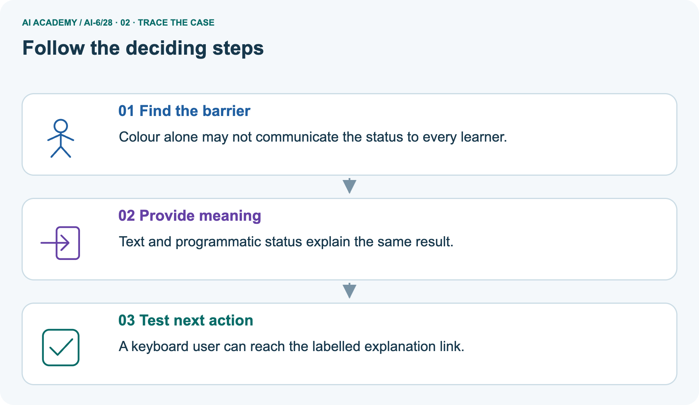
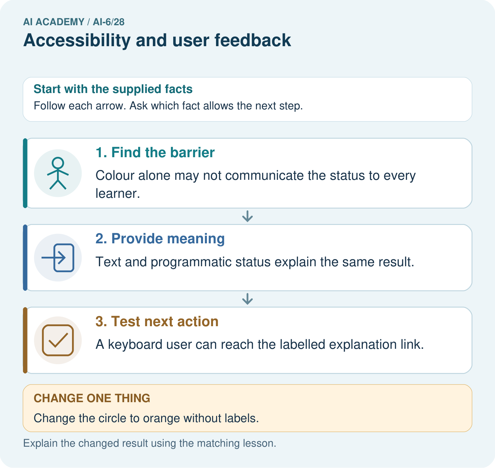
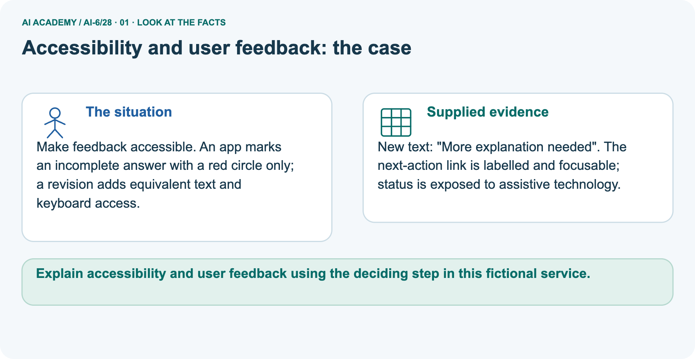
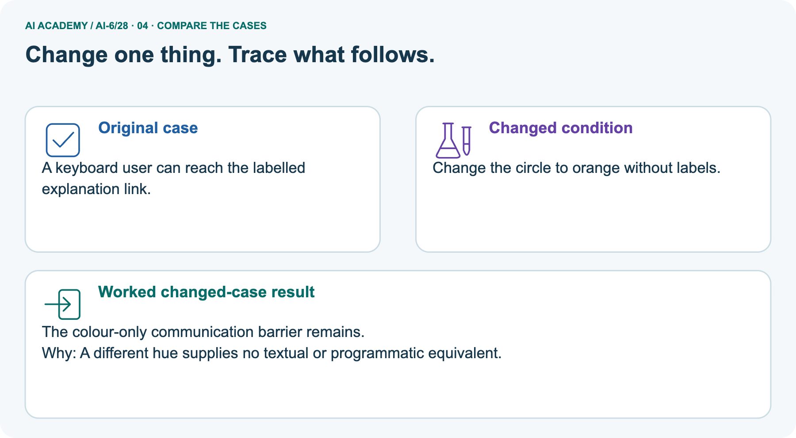
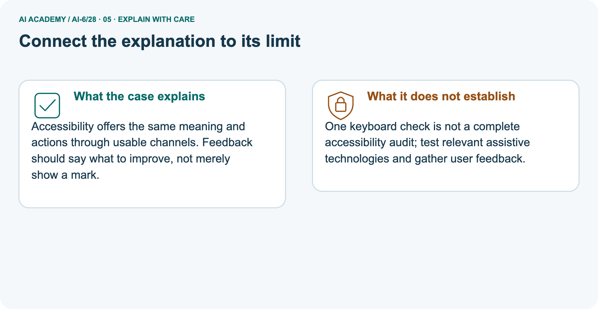
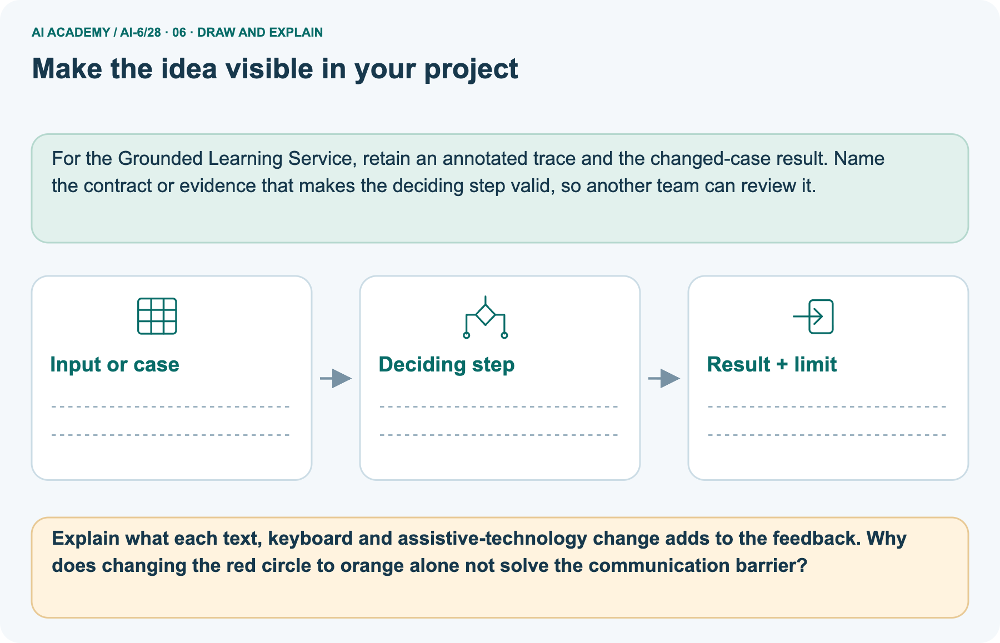

AI Academy · Level 6 · Grade 11 · Week 28 · Teacher guide
Accessibility and user feedback
Learn to understand, design, build, test and explain AI systems responsibly.
Project: Grounded Learning Service
THE CONNECTED WEEK
Ask which barrier the repair addresses and what evidence checks it.
Teach labels, error recovery and keyboard/programmatic meaning with primary guidance and honest evaluation scope.
Keep one habit: Model red-only barrier → inspect distinct repairs → plan keyboard/zoom/assistive checks → assess timeout proposal → record remaining user-evaluation gaps.
Main lesson · Section 1
Prepare the connected service investigation
Keep modelling, shared practice and independent evidence distinct.
Target and main teaching plan
Primary target: Explain the mechanism and terminology of accessibility and user feedback
| Session | Sequence and minutes | Resources |
|---|---|---|
| Session 1 · Understand · 45 min | 0–7: recall and prerequisite; 7–15: inspect the concrete case and predict; 15–30: teacher models the worked trace; 30–40: learners explain a step using the text and visual; 40–45: check the core idea. | Use Your mission, Notice the evidence, See how it works, Words that unlock the idea and Follow a worked example; record recall in the workbook. |
| Session 2 · Practise · 45 min | 0–5: retrieve the procedure; 5–15: W2 completion practice; 15–23: explain and check with a partner; 23–30: each learner answers the misconception check; 30–40: targeted reteaching or a harder variation; 40–45: prepare the investigation. | Use Find and repair a mistake, Practise together and Build your understanding; use the matching workbook W2 and Individual reasoning check. |
| Session 3 · Investigate and transfer · 45 min | 0–5: retrieve the decision rule; 5–20: investigate or trace; 20–30: start the independent case; 30–38: connect the project; 38–43: act on feedback; 43–45: plan the return check. | Use Run the investigation, Connect your project and Try a new case independently. Allow extra time for the full task set. When code is supplied, use the examples in See how it works or Follow a worked example and the browser lab in Supported practice, repair and portfolio. |
This is a starting allocation of 135 minutes, not a validated duration. Preserve all named topics. Schedule extra time for connected examples, the full investigation, independent cases and project building.
Repeated copies of a case share one recorded attempt; they are not new evidence.
Preparation and prerequisite
Lesson and workbook; paper and pencil
Calculator and optional local Python 3 for arithmetic; no live API or private data
Prepare the fresh retry separately and withhold its solution until after collection
A result depends on the inputs, procedure and conditions that produced it. Preserve data roles and distinguish observed outcomes from predictions or unmeasured conditions.
If the prior concept cannot be explained, use a short retrieval activity before this chapter.
Opening retrieval
Without opening the old lesson, explain one key idea from Human escalation workflows. Give an example and a mistake that the idea helps you avoid.
Look for: Explain the mechanism and terminology of human escalation workflows
Reference example, not the only acceptable wording: Teacher explanation: Escalation routes unresolved decisions to an authorised person with sufficient context. It must define owner, deadline and fallback.
Toy workflow routes conflicting room approval to coordinator with source IDs and requested decision. While awaiting review the assistant returns needs_review and performs no booking.
Without opening the old lesson, explain one key idea from Monitoring quality drift. Give an example and a mistake that the idea helps you avoid.
Look for: Explain the mechanism and terminology of monitoring quality drift
Reference example, not the only acceptable wording: Teacher explanation: Monitoring compares current outcomes with a declared reference and sampling protocol.
A change in observed quality may reflect case mix or instrumentation. For each window report eligible counts, passes, missing outcomes and condition mix.
Alert when success falls below the toy 80% threshold; investigate before attributing cause.
Without opening the old lesson, explain one key idea from Queues and asynchronous work. Give an example and a mistake that the idea helps you avoid.
Look for: Explain the mechanism and terminology of queues and asynchronous work
Reference example, not the only acceptable wording: Teacher explanation: Queues separate acceptance from completion. Work may be redelivered, so consumers must preserve operation IDs and deduplicate committed effects.
A queued job is pending, running, completed or failed. Acknowledge only after the declared durable completion step. A repeated completed ID returns its prior result; unknown status needs reconciliation.
Pictured end goal
Explain accessibility and user feedback using the deciding step in this fictional service.
Earlier wording, alternatives and picture transcripts
Teach the learning cycle
Retrieval answer guidance
Human escalation workflows
Monitoring quality drift
Queues and asynchronous work
Use the three-session teaching cycle above, with extra time as needed. Accessibility makes information and controls usable across stated needs. Feedback should describe the problem and recovery action without exposing sensitive details. Use the supplied constructed scenarios to make the mechanism inspectable. Collect W4 before sharing solutions. Students should name intermediate evidence and limitations; classroom pacing and learning effectiveness remain unvalidated.
Outcomes
Explain the mechanism and terminology of accessibility and user feedback
Apply the stated procedure to a new case with a traceable result
Identify an assumption or limitation and design a revealing follow-up
Preparation
Prerequisite answer
End goal for the pictorial case
This added worked case illustrates the week’s main idea. Retain all original and connected topics; schedule its practice within the teaching cycle.
Main lesson · Section 2
Teach equivalent meaning, usable actions and checked relationships
Distinguish proposed repairs, browser checks, assistive-technology checks and user feedback.
Definitions and complete fictional form contract
Accessibility makes information and controls usable across stated needs. Feedback should describe the problem and recovery action without exposing sensitive details.
A form provides visible labels, keyboard access, associated error text and a non-colour status indicator. Test at zoom and with keyboard. Do not treat automated checks as a complete user evaluation.
| Complete fictional form requirement | Concrete supplied example or check |
|---|---|
| Field label | Visible “Room ID”, programmatically associated with its input |
| Exact classroom input contract | One ASCII uppercase letter followed by one ASCII digit; A1 is valid, a1 and A11 are not |
| Error text | “Room ID must be one uppercase letter and one digit, such as A1.” |
| Error association | Connect field to its error text; expose invalid state when a validation error exists |
| Colour-independent meaning | Text explains the same error conveyed by the optional border colour |
| Keyboard action | Reach and operate the named native submit button; visible focus and logical order |
| Recovery | Return to the error field with its message available; retain only permitted non-sensitive input |
| Status honesty | Valid input means format accepted, not authorization, room existence or a successful booking |
| Evaluation limit | Automated checks and a keyboard trial are useful evidence, not complete usability or assistive-technology coverage |
Main barrier ledger and checked reasoning
| Main form barrier | Concrete repair | Evidence to collect rather than assume |
|---|---|---|
| Red border only | Add exact text error; retain colour as optional reinforcement | Read meaning without relying on colour |
| No associated field label | Visible Room ID label associated with input | Inspect accessible name and label activation |
| Error text detached from input | Associate error description and invalid state with field | Inspect relationship and check relevant assistive technology |
| Recovery action unclear | State the accepted format and an example | Learner can explain what to change |
| Keyboard path unknown | Use native control; check focus order, activation and visible focus | Record actual tested path, browser and remaining gaps |
Main red-only invalid room feedback needs a visible associated label, explicit error/correction text, programmatic field/error relationship and usable keyboard recovery. Added fictional format A1 passes, a1 fails; format validity does not establish authorization/existence/booking. Picture text “More explanation needed”, next-action link and programmatic status address different barriers; orange alone does not.
Encourage specific missing-reasoning feedback. The investigation is design/inspection, with actual interface, assistive-technology and learner trials marked not run unless performed. Selected timeout case: keyboard-operable submit plus preservation of permitted non-sensitive valid input with clear retry/review feedback; verify focus order/error association.
Do not preserve secrets by default or claim automated checks are a full audit.
Accessibility and user feedback — evidence trace
Guided: Colour alone does not communicate the failure to all users. Add labelled error text and an actionable correction; retain keyboard navigation.
Qualification: Accessibility requirements need real interaction checks and appropriate user feedback; a checklist alone is incomplete.
Exit: accept a concrete variation with its predicted outcome and a stated condition that would challenge the mechanism; reject a claim resting on unmeasured evidence.
An invalid room is marked only by a red border; no text error or associated label is provided.
Colour alone does not communicate the failure to all users. Add labelled error text and an actionable correction; retain keyboard navigation.
Compare the intermediate evidence with the final statement. Explain why each number or decision follows from the stated inputs. The conclusion belongs to this scenario and procedure; changing the inputs, evaluation population or authority can change what it establishes. Retain only authorized, minimized evidence without unnecessary private content so a later revision can be compared honestly.
Interaction and evidence probes
| Accessibility probe | Expected interpretation |
|---|---|
| Colour removed or not perceived | Text still communicates the problem |
| Field focused | Name, current state and relevant error relationship are available for checking |
| Tab and reverse Tab used | Logical order, visible focus and no trap on the tested path |
| Button reached but cannot activate | Keyboard task still fails |
| Generic “Error” with no correction | Meaning and recovery remain inadequate |
| Programmatic attribute added | Inspect actual relationships; do not infer user experience from markup alone |
| Zoom and narrow view | Check reading, controls and task completion; record the tested conditions |
| Non-sensitive input retained after recoverable error | Avoid unnecessary re-entry under the stated policy |
| Automated checker passes | Scoped technical evidence, not complete accessibility or real-user evaluation |
Separate answer-feedback meaning and action
Make feedback accessible. An app marks an incomplete answer with a red circle only; a revision adds equivalent text and keyboard access.
New text: "More explanation needed". The next-action link is labelled and focusable; status is exposed to assistive technology.
The picture is a separate answer-feedback example. The original red circle gains the text “More explanation needed”, a labelled focusable next-action link and programmatic status information. These additions address different barriers: words communicate meaning, a usable link offers an action and programmatic information supports assistive-technology access.
The message can be made more actionable by identifying the missing reasoning, for example “Explain which source supports your answer.” Changing red to orange alone supplies none of these missing meanings or actions. A keyboard-reachable link still needs activation, focus visibility and relevant assistive-technology checks; no actual learner trial is documented by the picture.
Picture trace and colour-only change key



Read the picture one step at a time
Accessibility offers the same meaning and actions through usable channels. Feedback should say what to improve, not merely show a mark.
One keyboard check is not a complete accessibility audit; test relevant assistive technologies and gather user feedback.
Change: Change the circle to orange without labels.
Prediction: The colour-only communication barrier remains.
Reason: A different hue supplies no textual or programmatic equivalent.
Primary reference guidance and scope
Reference guidance: W3C WAI Forms Tutorial (https://www.w3.org/WAI/tutorials/forms/), User Notifications (https://www.w3.org/WAI/tutorials/forms/notifications/) and native HTML controls technique H91 (https://www.w3.org/WAI/WCAG21/Techniques/html/H91). Use the guidance to plan checks; no conformance certification or real-user findings are supplied by this fictional lesson.
Earlier wording, alternatives and picture transcripts
Begin by writing the question the procedure is intended to answer. Identify the information already supplied, the information it will produce and the information still missing.
These are constructed classroom examples; they do not require live accounts, private records or an external service. Do not treat a plausible explanation as a measured outcome.
Before applying the procedure, write its units, denominator or decision boundary where relevant. A partner should be able to repeat each step using the same inputs.
If a required input is absent or violates the stated contract, record that condition explicitly instead of quietly replacing it with a convenient value.
| Term | Meaning |
|---|---|
| Accessible label | Text identifying a control's purpose |
| Focus order | The sequence of keyboard navigation |
| Actionable error | A message explaining how to recover |
Model the reasoning aloud
Use the complete worked example below before asking learners to complete W2. Reveal a small part, invite a prediction, then explain the deciding step.
These teacher notes contain solutions; do not reveal the independent case answer during modelling.
| Thinking move | Teacher prompt |
|---|---|
| Plan | What is given? What is the question? Which procedure fits these facts? |
| Do | Point to each input and intermediate step in the worked trace. Name the rule that allows the next step. |
| Check | Does the output answer the question? Which assumption or limitation prevents a larger claim? |
Use the diagram and verbal explanation together. Ask learners to match a sentence to a specific visual step; do not assign learners fixed visual or auditory learning styles.
A pictorial worked case: Accessibility and user feedback
The facts we will use



Why this result follows
What this example does not establish
Change one thing in the pictured case
Ask while showing the picture
Cover the result. Ask learners to name the inputs and predict the next step. Uncover one step, connect the icon to the actual procedure, and explain its evidence. Then change the supplied condition and compare.
The picture is a representation; it does not document execution of a real AI model.
Main lesson · Section 3
Model a step,then remove help
Collect each learner’s reasoning before showing a key.
Current completion task and checked reasoning
Completion task: An invalid room is marked only by a red border; no text error or associated label is provided. Show the intermediate steps and give the conclusion with its scope.
Teacher check: Teacher explanation: Colour alone does not communicate the failure to all users. Add labelled error text and an actionable correction; retain keyboard navigation.
Start by identifying the given inputs together. Leave the intermediate steps blank. If needed, model one step, then withdraw that help on the next step. Move to a full trace only when the partial trace is understood.
For partners, alternate explainer and checker; collect a response from every learner before discussion.
Individual misconception check
Use the worked case for Accessibility and user feedback. Proposed explanation: “The worked result establishes every future case”. Decide whether this explanation is supported.
Point to the step or supplied fact that decides; explain your repair if needed.
Expected correction: Accessibility requirements need real interaction checks and appropriate user feedback; a checklist alone is incomplete.
Collect explanations, not only yes/no votes. If a misunderstanding is common, re-model the relevant step for the class.
If it affects a few learners, give a short targeted group explanation while others solve a more demanding variation.
Pictured reasoning and changed case
Explain what each text, keyboard and assistive-technology change adds to the feedback. Why does changing the red circle to orange alone not solve the communication barrier?
Colour alone may not communicate the status to every learner. Text and programmatic status explain the same result. A keyboard user can reach the labelled explanation link.
Changed case: The colour-only communication barrier remains. A different hue supplies no textual or programmatic equivalent.
Changed-case reasoning: The colour-only communication barrier remains. A different hue supplies no textual or programmatic equivalent.
Collect each learner’s explanation before discussion. Use the first missing connection between input, deciding step and result to choose support. This question is worked-case practice, not fresh mastery evidence.
Accessible support and extension
Use See how it works and Follow a worked example. Collect a prediction before revealing its result; ask the learner to point to each intermediate fact.
Provide an input/procedure/result/limit frame and a calculator when needed. Ask students to identify the first step before completing the whole trace.
Extension: compare two concrete variants of this mechanism while holding unrelated conditions fixed; report both successful and unsuccessful outcomes.
Earlier wording, alternatives and picture transcripts
| Time or stage | Teacher action |
|---|---|
| Session 1: 0–7 minutes | Retrieve the prerequisite; identify the input, procedure and evidence source. |
| 7–18 minutes | Explain section 1 and vocabulary. Complete W1 with a mechanism-based explanation. |
| 18–32 minutes | Trace the declared procedure and worked case. Complete W2, recording intermediate steps. |
| 32–45 minutes | Discuss the diagram with the worked input; use W3 to distinguish measured claims and limitations. |
| Session 2: 0–8 minutes | Retrieve the worked reasoning and collect the guided response before discussing it. |
| 8–20 minutes | Compare a proposed boundary variant with the original case; identify what remains fixed. |
| 20–35 minutes | Collect W4 independently. Require the procedure trace and the bounded conclusion. |
| 35–45 minutes | Use W5 and exit responses for feedback. Administer the fresh retry after feedback and preserve both attempts. |
Reduce help deliberately
Individual reasoning check
Pictorial practice question
Reasoned teacher answer
Main lesson · Section 4
Run the complete supplied investigation
Separate predictions,actual runs and paper traces.
Complete inputs,expected results and limits
Main red-only form needs meaningful labelled/associated error text and usable correction, not just a different colour. Added paper/mock inspection uses a1 invalid and A1 format accepted with no booking claim. Picture text, keyboard link and programmatic status address separate barriers; check actual interaction rather than infer from attributes.
Selected independent case: provide keyboard-operable submit, preserve permitted non-sensitive valid input after timeout and give clear retry/review feedback. Verify focus order and error association. Record unperformed browser, assistive-technology and user checks as not run.
Diagnose the current misconceptions
The worked result establishes every future case: Accessibility requirements need real interaction checks and appropriate user feedback; a checklist alone is incomplete.
A missing input may be replaced without recording the change: A replacement changes the evidence or contract. Record the change and its justification; do not silently turn unknown into a measured value.
Repeating an assessed case is new independent evidence: A replay checks consistency. An example used for feedback or revision cannot later be described as untouched final evaluation.
Use Run the investigation for the evidence ledger. Add a boundary or missing-input case and record the expected response before checking. More successful repeats of one case do not establish wider coverage.
Choose accessible support
| What the response shows | Next teaching action |
|---|---|
| Missing or misread facts | Read the case aloud, mark supplied versus unknown facts, and let the learner restate it. |
| Wrong procedure | Return to the deciding step in the worked case. Contrast it with the proposed incorrect explanation. |
| Arithmetic or implementation error | Trace intermediate values or lines; preserve the first mismatch and retry that step. |
| Correct result without a reason | Ask for a trace and a changed case before marking independent understanding. |
| An unsupported wider claim | Ask which supplied evidence supports the claim and which further observation would be needed. |
Offer an oral explanation, drawing, enlarged visual or fewer examples when that removes a reading/writing barrier. Keep the same reasoning goal.
Stretch secure learners by changing a boundary or assumption and asking them to defend the effect, not simply by assigning more of the same questions.
Earlier wording, alternatives and picture transcripts
Match the support to the first error
Main lesson · Section 5
Assess the new service scenario
Keep the selected answer private until after a first attempt.
Selected independent task and checked answer
Selected case: Submit is mouse-only; timeout replaces the entire form and loses input. Propose two concrete improvements.
Teacher explanation: Provide keyboard-operable submit and preserve non-sensitive valid input with a clear retry/review message. Verify focus order and error association.
Judge explanation,trace and limits
| Dimension | Evidence required |
|---|---|
| Explanation | Names the applicable idea or procedure and ties it to the supplied facts. |
| Trace and result | Preserves the given inputs and shows the relevant intermediate steps; distinguishes a prediction from an observed execution. |
| Limits | States the assumptions, missing evidence or conditions under which the result would change. |
Record each dimension as not yet, with support, or independent. Accept a valid alternative procedure with a defensible trace.
Do not penalise an honestly recorded model failure if the learner correctly explains its evidence and limits.
Give one usable repair
Name the earliest unsupported step and give one action to repair it. Have the learner make that repair now and explain why. Then assess the relevant skill on a fresh, fully specified case.
Confirm it was not previously practised with feedback; solve and check the new case before assigning it. A follow-up design prompt is a starting brief, not automatically an equivalent test.
W1 Explain the mechanism
Explain the weekly mechanism in your own words. Use the worked scenario to name its input, decision rule and output.
Teacher explanation: Accessibility makes information and controls usable across stated needs. Feedback should describe the problem and recovery action without exposing sensitive details.
A form provides visible labels, keyboard access, associated error text and a non-colour status indicator. Test at zoom and with keyboard. Do not treat automated checks as a complete user evaluation.
W2 Trace the worked case
An invalid room is marked only by a red border; no text error or associated label is provided. Show the intermediate steps and give the conclusion with its scope.
Teacher explanation: Colour alone does not communicate the failure to all users. Add labelled error text and an actionable correction; retain keyboard navigation.
W3 Audit the limit
A report omits this qualification: Accessibility requirements need real interaction checks and appropriate user feedback; a checklist alone is incomplete.
Explain how omitting it could change a reader's interpretation, and write an accurate replacement.
Teacher explanation: Accessibility requirements need real interaction checks and appropriate user feedback; a checklist alone is incomplete.
State the observed result separately from the unverified or out-of-scope claim; preserve the original evidence rather than inventing a missing fact.
W5 Design a revealing follow-up
For the worked scenario, propose one additional case that could reveal a failure, describe its expected outcome before running it, and explain what would need to remain fixed for a fair comparison.
Do not reuse W4 as a new final test after receiving feedback.
Teacher explanation: Accept a concrete variant of the worked input or a missing/conflicting/boundary condition, with an expectation derived from the declared procedure.
Require preserved settings, original outputs and data roles. Accessibility requirements need real interaction checks and appropriate user feedback; a checklist alone is incomplete.
The new case should test this particular mechanism rather than merely restate the original result.
Earlier wording, alternatives and picture transcripts
Guided and exit questions
Guided: Colour alone does not communicate the failure to all users. Add labelled error text and an actionable correction; retain keyboard navigation.
Qualification: Accessibility requirements need real interaction checks and appropriate user feedback; a checklist alone is incomplete.
Exit: accept a concrete variation with its predicted outcome and a stated condition that would challenge the mechanism; reject a claim resting on unmeasured evidence.
W1 Explain the mechanism
W2 Trace the worked case
W3 Audit the limit
W4 Apply a new case independently
Submit is mouse-only; timeout replaces the entire form and loses input. Propose two concrete improvements.
Teacher explanation: Provide keyboard-operable submit and preserve non-sensitive valid input with a clear retry/review message. Verify focus order and error association.
W5 Design a revealing follow-up
Independent assessment and fresh retry
W4: Provide keyboard-operable submit and preserve non-sensitive valid input with a clear retry/review message. Verify focus order and error association. Require intermediate reasoning and the stated scope.
Fresh retry: Status uses a green icon without text; focus jumps unpredictably after error. Expected reasoning: Add status text and manage focus to the relevant error or summary. Test the actual interaction.
If students need support, record it and reassess with another new case rather than awarding independence to a copied answer.
Assess independent transfer
Selected case answer
Feedback that the learner uses
Main lesson · Section 6
Connect, support and revisit service design
Use saved evidence and boundary decisions to choose the next step.
Project and next-week bridge
Add a labelled accessibility and user feedback evidence sheet to Grounded Learning Service. Show how you can explain the mechanism and terminology of accessibility and user feedback.
Use the supplied fictional case and keep its inputs, intermediate steps, calculation or prediction, and limitation. Connect this record to last week’s record; a matching answer without a trace is insufficient.
Provide an input/procedure/result/limit frame and a calculator when needed. Ask students to identify the first step before completing the whole trace.
Extension: compare two concrete variants of this mechanism while holding unrelated conditions fixed; report both successful and unsuccessful outcomes.
Next connection: Performance and cost experiments. Preserve the current case record and retrieve its evidence boundary before moving on.
Retain the project ledger and assess a changed case after support. Check the relevant prerequisite before carrying this component forward.
For the Grounded Learning Service, retain an annotated trace and the changed-case result. Name the contract or evidence that makes the deciding step valid, so another team can review it.
Delayed return and support record
Suggested return points in this level: ai-6/29, ai-6/31, ai-6/34. Use actual classroom dates, adjusting for holidays and gaps. One, three and six teaching weeks are scheduling choices, not a claimed optimal spacing.
At a delayed check, ask for the idea from memory and a changed application. Compare with the earlier independent response and record support used.
For a new level, revisit the previous capstone before checking the new prerequisites.
| Record | Teacher evidence |
|---|---|
| Learner code and date | |
| Concept and case used; prior exposure | |
| Explanation / trace / limits | |
| Support and first repair | |
| Changed case and delayed outcome | |
| Next teaching action |
Use the evidence to choose reteaching or the next step. A completed page, confidence rating or attractive project does not by itself demonstrate understanding.
Earlier wording, alternatives and picture transcripts
Plan the delayed return
Project evidence from this case
Reference bank and extra practice
Choose the reference that helps your next step.
Reference · Alternative planning checklist
Reference · Section 7
Reference · Alternative planning checklist
Use alongside the main route when helpful.
Planning,assessment and project reminders
Teaching target: Explain the mechanism and terminology of accessibility and user feedback
Prepare the labelled worked-case picture, the matching workbook, fictional input cards and a place for individual responses. Check a local Python 3 environment before class; have a paper-trace version ready.
| Session | Plan | Resources |
|---|---|---|
| Session 1 · Understand · 45 min | 0–7: recall and prerequisite; 7–15: inspect the concrete case and predict; 15–30: teacher models the worked trace; 30–40: learners explain a step using the text and visual; 40–45: check the core idea. | Use Your mission, Notice the evidence, See how it works, Words that unlock the idea and Follow a worked example; record recall in the workbook. |
| Session 2 · Practise · 45 min | 0–5: retrieve the procedure; 5–15: W2 completion practice; 15–23: explain and check with a partner; 23–30: each learner answers the misconception check; 30–40: targeted reteaching or a harder variation; 40–45: prepare the investigation. | Use Find and repair a mistake, Practise together and Build your understanding; use the matching workbook W2 and Individual reasoning check. |
| Session 3 · Investigate and transfer · 45 min | 0–5: retrieve the decision rule; 5–20: investigate or trace; 20–30: start the independent case; 30–38: connect the project; 38–43: act on feedback; 43–45: plan the return check. | Use Run the investigation, Connect your project and Try a new case independently. Allow extra time for the full task set. When code is supplied, use the examples in See how it works or Follow a worked example and the browser lab in Supported practice, repair and portfolio. |
Before class, solve the supported practice: An invalid room is marked only by a red border; no text error or associated label is provided. Show the intermediate steps and give the conclusion with its scope.
Reasoned practice answer: Teacher explanation: Colour alone does not communicate the failure to all users. Add labelled error text and an actionable correction; retain keyboard navigation.
Check every learner before discussion: Use the worked case for Accessibility and user feedback. Proposed explanation: “The worked result establishes every future case”. Decide whether this explanation is supported.
Point to the step or supplied fact that decides; explain your repair if needed.
Misconception repair: Accessibility requirements need real interaction checks and appropriate user feedback; a checklist alone is incomplete.
Support: read the exact case aloud, enlarge the labelled picture, supply input cards and model only the first deciding step. Accept a spoken explanation or drawing; retain the reasoning goal.
Extension: Change the circle to orange without labels. Require a prediction and a reason before comparing. Expected result: The colour-only communication barrier remains.
Reason: A different hue supplies no textual or programmatic equivalent.
Independent assessment: withhold the reserved answer until the learner has attempted the new case. Record support separately from correctness.
| Criterion | Not yet | With support | Independent |
|---|---|---|---|
| Explanation | Names an answer without a deciding fact | Uses a hint to link fact and decision | Explains the deciding fact in own words |
| Trace or test | Cannot connect input and result | Completes steps with prompts | Traces or tests a changed case accurately |
| Limits and revision | Claims more than evidence supports | Names a limit after a prompt | States a defensible limit and useful next test |
Project checkpoint: Prepare the demonstration. Gather reproducible instructions, evidence, access checks and remaining limitations.
Use the weekly teacher answer for topic-specific reasoning. A saved progress tick is an activity record; judge mastery from the learner’s explanation and evidence.
Reference · Feedback,labs and repair paths
Reference · Section 8
Reference · Feedback,labs and repair paths
Retain the first attempt and the evidence used for a repair.
Feedback and record guidance
Use the two formative questions as supported practice, not as independent mastery scores. Discuss the deciding evidence rather than accepting a guessed selection.
The feedback comes from the reviewed public worked case. Do not reveal the separately reserved independent teacher answer until the learner has attempted that case.
This week has no code block. Use this routine when a later lesson includes an executable lab.
Ask students to predict before running code. Preserve errors and actual outputs; collect a changed test and an explanation. The branch-boundary and indexing lessons deliberately include failure cases.
Use the earlier worked-explanation links to address a specific missing building block, then return to the current question. Adapt this suggestion after observing the learner; it is not an automatic diagnosis.
Collect the completed-work portfolio as evidence. Record support separately from correctness, and assess explanation, trace/test and limitations. Progress ticks and quiz selections alone do not establish mastery.
Reference · Teach with the six pictures
Reference · Section 9
Reference · Teach with the six pictures
Choose one picture for a particular reasoning move.
01. Accessibility and user feedback: the case



Make feedback accessible. An app marks an incomplete answer with a red circle only; a revision adds equivalent text and keyboard access. Supplied facts: New text: "More explanation needed".
The next-action link is labelled and focusable; status is exposed to assistive technology.
Point to the given fact that matters most. Explain why it matters.
Teacher prompt: Point to the given fact that matters most. Explain why it matters. Ask learners to describe one label or arrow in ordinary words. Use the adjacent transcript if the image is difficult to see.
02. Follow the deciding steps
Find the barrier: Colour alone may not communicate the status to every learner. → Provide meaning: Text and programmatic status explain the same result. → Test next action: A keyboard user can reach the labelled explanation link.
Point to each numbered stage and explain which recorded input it uses.
Teacher prompt: Point to each numbered stage and explain which recorded input it uses. Ask learners to describe one label or arrow in ordinary words. Use the adjacent transcript if the image is difficult to see.
03. Accessibility and user feedback — evidence trace


Accessibility and user feedback — evidence trace.
An invalid room is marked only by a red border; no text error or associated label is provided. | A form provides visible labels, keyboard access, associated error text and a non-colour status indicator.
Test at zoom and with keyboard. Do not treat automated checks as a complete user evaluation. | Colour alone does not communicate the failure to all users.
Add labelled error text and an actionable correction; retain keyboard navigation.
Read the labels and values. Explain the relationship the model shows.
Teacher prompt: Read the labels and values. Explain the relationship the model shows. Ask learners to describe one label or arrow in ordinary words. Use the adjacent transcript if the image is difficult to see.
04. Change one thing. Trace what follows.



Original case: A keyboard user can reach the labelled explanation link. Changed condition: Change the circle to orange without labels. Expected result: The colour-only communication barrier remains.
Reason: A different hue supplies no textual or programmatic equivalent.
Predict before checking the worked changed-case result. Name what changed and what the supplied facts allow you to conclude.
Teacher prompt: Predict before checking the worked changed-case result. Name what changed and what the supplied facts allow you to conclude. Ask learners to describe one label or arrow in ordinary words.
Use the adjacent transcript if the image is difficult to see. Changed-case reasoning: A different hue supplies no textual or programmatic equivalent.
05. Connect the explanation to its limit



Accessibility offers the same meaning and actions through usable channels. Feedback should say what to improve, not merely show a mark.
Limit: One keyboard check is not a complete accessibility audit; test relevant assistive technologies and gather user feedback.
Explain the case, then point to a limit on the claim.
Teacher prompt: Explain the case, then point to a limit on the claim. Ask learners to describe one label or arrow in ordinary words. Use the adjacent transcript if the image is difficult to see.
Keep the stated scope: One keyboard check is not a complete accessibility audit; test relevant assistive technologies and gather user feedback.
06. Make the idea visible in your project



For the Grounded Learning Service, retain an annotated trace and the changed-case result. Name the contract or evidence that makes the deciding step valid, so another team can review it.
Draw your input, deciding step, result and limit. Supported question: Explain what each text, keyboard and assistive-technology change adds to the feedback.
Why does changing the red circle to orange alone not solve the communication barrier?
Draw your project trace and justify the deciding step using evidence.
Teacher prompt: Draw your project trace and justify the deciding step using evidence. Ask learners to describe one label or arrow in ordinary words. Use the adjacent transcript if the image is difficult to see.
Supported practice key: Colour alone may not communicate the status to every learner. Text and programmatic status explain the same result. A keyboard user can reach the labelled explanation link.
Changed case: The colour-only communication barrier remains. A different hue supplies no textual or programmatic equivalent.
Earlier wording, alternatives and picture transcripts
Use one picture at a time. Hide a worked result before asking for a prediction, then reveal it for feedback. These are supported teaching cases; retain the separate independent assessment for a fresh first attempt.